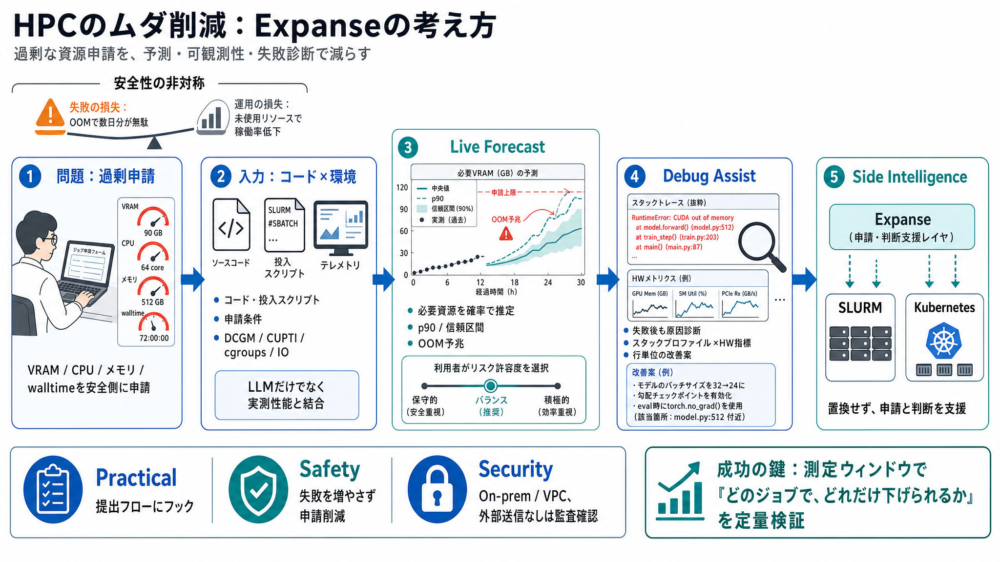

Launch HN: Expanse (YC P26) – Unlock Wasted GPU Capacity | Hacker News
We built Expanse () to increase the effective capacity of your HPC/GPU clusters running schedulers/orchestrators like Ku…

GPUクラスター/SLURM/Kubernetesで起きる「必要以上の資源申請」を、予測・可観測性・失敗診断で減らす取り組みです。
研究者は失敗回避のため、VRAM/CPU数/メモリ/walltimeを安全側に“過剰に”申請しがちです。
結果として「利用者の安全側インセンティブ」と「データセンターの全体最適化」が噛み合いません。
Expanseはジョブ投入前に、コード/投入スクリプト/テレメトリから「実際に必要な資源量」を推定します。
テキストだけ（LLM）の“真空推論”ではなく、計算グラフと実測性能を結びます。
利用者は推定を“鵜呑み”せず、リスク許容度を選べます。
推定が外れて失敗しても、スタックプロファイルとハードウェア指標の相関解析で原因に寄り添います。
単なる最適化ツールではなく、実務で“直せる”情報を返す設計です。
ExpanseはSLURM/Kubernetesの制御機構を置き換えるのではなく、申請とユーザ判断に介入する“知能レイヤ”です。
ハード構成やワークロード変化への適応を狙います。
ただし実装詳細は本文抜粋だけでは不十分で、監査・契約確認が重要です。
成功の鍵は「どのジョブ種別で」「どれだけ申請を下げても失敗が増えないか」を測定ウィンドウで定量検証することです。
We built Expanse () to increase the effective capacity of your HPC/GPU clusters running schedulers/orchestrators like Ku…
Expanse home pagelight logodark logo. ##### Getting Started. Expanse is the intelligence layer for HPC compute. Resource…
Expanse is the intelligence layer for compute infrastructure that unlocks wasted GPU capacity. Running compute on a clus…
Expanse is a Dell integrated compute cluster, with AMD Rome processors, NVIDIA V100 GPUs, interconnected with Mellanox H…
The Expanse cluster is managed using the Bright Computing HPC Cluster management system, and the SLURM workload manager …